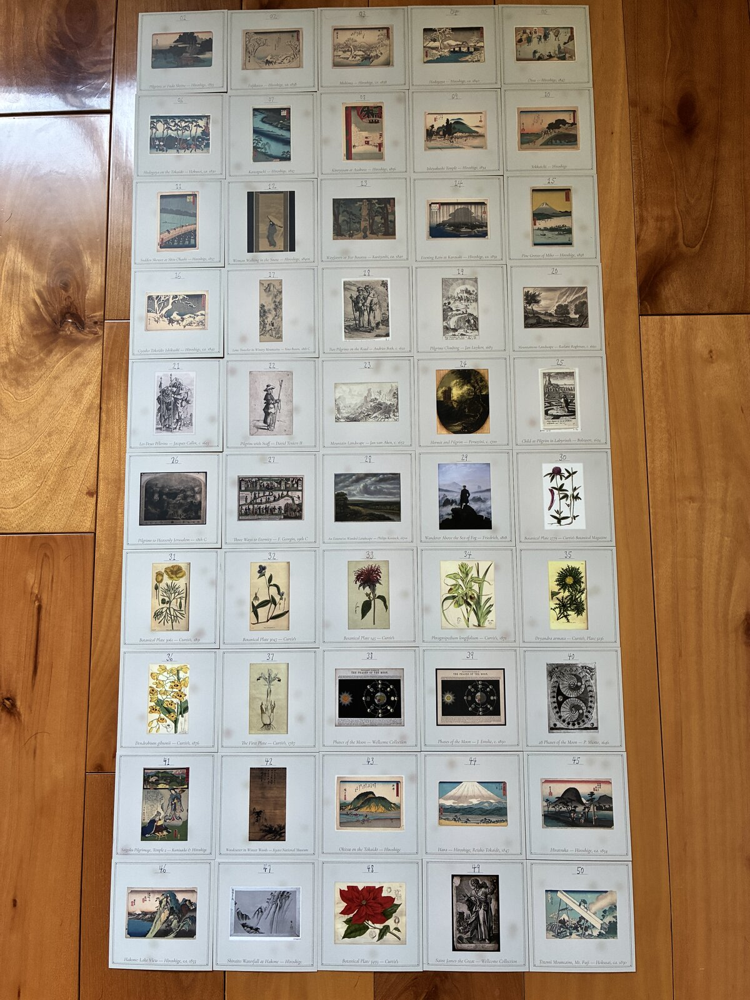

You found one.
Cards slipped into books in libraries and bookstores. Broadsides pinned to walls in meditation centers, hostels, and trailheads. Both come from a walker who made Pilgrim, an app for contemplative walks. Each one is a small gift for a stranger. You found one of them.
Thank you for noticing it.

Where they've been found
Nothing has been found yet.
The first cards and broadsides go out in Spring 2026.
When one finds you, leave a note — yours will be the first.
Did one find you?
If a card or a broadside found you, leave a note. Where you were, what it said, what happened — any or all of it, in whatever words feel right.
Names and emails are not asked for and will not be collected. Your story joins the archive.
or write to found@pilgrimapp.org